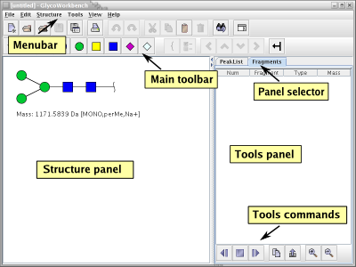

The graphical interface of the GlycoWorkbench software consists of a
single window divided into panels. Each panel corresponding to a
different tool. The structure panel is where the structures are built
and displayed with their masses. The tool panels are hideable and can
be switched by clicking on the corresponding tab in the "tool panel
selector".

All the actions to be performed in the GlycoWorkbench can be accessed
by the menus in the menubar. Some of the commands are also replicated
in the toolbar for faster access. Some commands can be executed by
pressing a combination of keys, in this case the combination of keys
to be pressed is written next to the corresponding entry in the
menu. In the following, a command from the menu is referenced as
"Menu name -> command name".
A popup menu with a reduced set of commands to be performed on the
selected residue(s) can be activated by pressing the mouse right
button on a residue in the structure panel. Each tool panel has its
own set of commands that can be accessed both by the dedicated toolbar
at the bottom of the corresponding panel or by activating the specific
popup menu with a mouse right click.